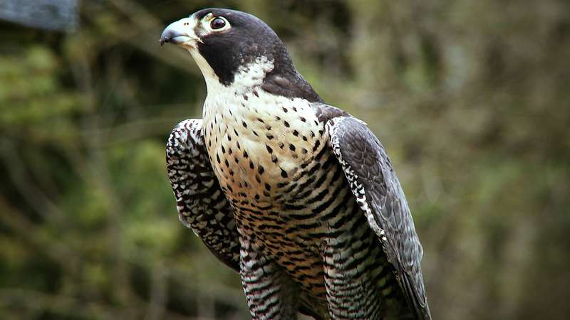
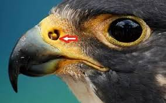

Speed
With the whopping speed of 200 miles per hour when diving it is the fastest animal living on the planet. Then you might have a question that, how do their lungs sustain the pressure and speed? They could sustain the pressure and speed because of the little bone inside their nostril,  it breaks up the flow of the air so that the air doesn't rush into their lungs. They also have a realy thick heavy boned keel or breastbone that provides a little sturdier skeleton for those high dives
Voice
Habitat
Peregrine falcons are among the world's most common birds of prey and live on all continents except Antarctica. They prefer wide-open spaces, and thrive near coasts where shorebirds are common, but they can be found everywhere from tundra to deserts.
Behaviour
Peregrine falcons are solitary, territorial, top predators. Those that migrate live alone more than 8 months of the year, spending only 16-18 weeks with a mate raising a family. Non-migratory peregrines, such as those in Pittsburgh, stay on territory alone or as a mated pair.
Diet
Their typical prey items include shorebirds, ducks, grebes, gulls, pigeons, and songbirds. Peregrine falcons also eat bats, and they occasionally steal prey—including fish and rodents—from other raptors.
THANK YOU